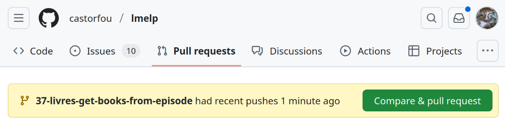

🚀 issue - branch - merge¶
As much as possible I want to use this approach 👍
From https://github.com/castorfou/lmelp, 🔗
- create an issue 📝
- from issue create a branch (Development > Create a branch) 🔀
- work from this branch 💻
- when satisfied merge to main (then github actions will trigger) ✅
merge to main¶
from Pull requests tab, should automatically suggest Compare & pull request

then View pull request > Merge pull request > Confirm merge > Delete branch
🤖 github actions¶
configured in .github/workflows/ci.yml ⚙️
Tests automatiques¶
Le projet dispose de tests automatiques configurés via GitHub Actions dans .github/workflows/tests.yml 🧪
Configuration des tests¶
- Framework : pytest avec couverture de code
- Environnement : Python 3.12 sur Ubuntu Latest
- Déclenchement : Push et Pull Request sur toutes les branches
- Couverture minimale : 90% (configurable dans le workflow)
Structure des tests¶
tests/
├── unit/ # Tests unitaires par module
│ ├── test_config.py # Tests nbs/config.py (97% couverture)
│ ├── test_mongo.py # Tests nbs/mongo.py (98% couverture)
│ ├── test_llm.py # Tests nbs/llm.py (100% couverture)
│ ├── test_rss.py # Tests nbs/rss.py (100% couverture)
│ └── test_fixtures.py # Tests infrastructure données
├── integration/ # Tests d'intégration
│ └── test_workflows.py # Tests workflows RSS→MongoDB→LLM
├── ui/ # Tests interface utilisateur
│ └── test_streamlit.py # Tests basiques Streamlit
└── fixtures/ # Données de test
├── sample_config.json
├── sample_episode.json
├── sample_transcription.txt
└── sample_rss_feed.xml
Commandes de test locales¶
# Tous les tests
pytest
# Tests avec couverture
pytest --cov=nbs --cov-report=term-missing
# Tests spécifiques
pytest tests/unit/test_config.py -v
# Rapport HTML de couverture
pytest --cov=nbs --cov-report=html
# Voir htmlcov/index.html
Métriques actuelles¶
- Total : 124 tests (104 unitaires + 11 intégration + 9 UI)
- Couverture modules testés : 98.75% moyenne
config.py: 97%llm.py: 100%mongo.py: 98%rss.py: 100%- Statut : ✅ Tous les tests passent
Intégration CI/CD¶
Le workflow .github/workflows/tests.yml :
- Installation : Python + dépendances depuis
tests/requirements.txt - Exécution :
pytestavec couverture de code - Validation : Échoue si couverture < 90% (sur modules testés)
- Robustesse : Tests depuis répertoire externe pour valider portabilité
Voir 📖 Guide complet des tests unitaires pour plus de détails.